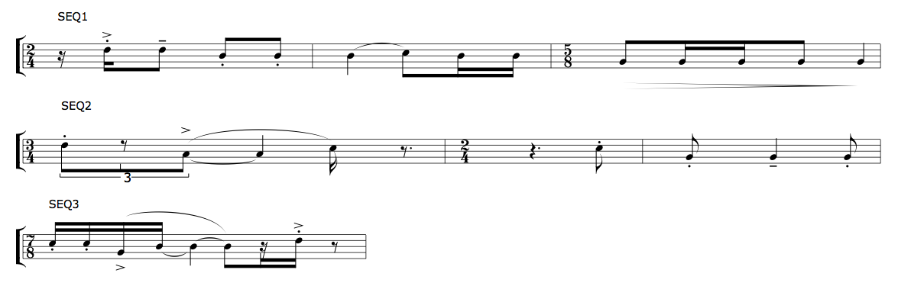

rthm-seq-palettes and rthm-seq-maps
+ Associated example files
The user's control of rhythms in slippery chicken is
primarily through the definition of rthm-seq objects
("rhythm sequences"). These have a function similar to that of a
rhythmic motif, or theme, or a series or row. In the simplest case, the
user defines a palette of fixed sequences of rhythmic durations in
the rthm-seq-palette, and then determines the order in
which these occur in the composition by placing their IDs in
the rthm-seq-map.
This page addresses the use of the rthm-seq-palette
and rthm-seq-map in slippery chicken. More detail
can be found on the specifics of individual rhythm units and their
corresponding nomenclature on the rhythms
page.
+ The rthm-seq object
Like the pitch-seq object, the
rthm-seq is defined within
the make-slippery-chicken function without specifying
the term. It is created internally by
slippery chicken from the parenthetical expressions
contained in the rthm-seq-palette. Each individual
parenthetical expression within a rthm-seq-palette will
be referred to in this manual as a rthm-seq object, or
just rthm-seq. Each rthm-seq must be given
a unique ID, with which it is referenced later from within
the rthm-seq-map.
Measures
Each rthm-seq must consist of complete measures. It
must be at least one measure long, but can be any number of measures
in length. Each measure within a rthm-seq is enclosed in
separate parentheses. Each measure can have a different time
signature, indicated as the upper number of the time signature
followed by the lower, enclosed in parentheses. If no time signature
is indicated, the time signature remains the same as that of the
previous measure.
This rthm-seq, for example, has the
ID seq1, and contains 3 measures with two specified time
signatures:
(seq1 ((((2 4) (s) - s e - - e e -)
(q - e s s -)
((5 8) - e s s e - q))))
Empty Measures
When creating rthm-seq-palettes you can add empty bars
with the requisite number of rests but the easiest thing to do is simply
leave them blank:
(5 ((1 ((((3 4) { 7 (28/3) - 28/3 x 6 - })
((2 4) (q) g e (e)) ()
((5 8)))))))
Note that two empty bars are created there: the first by a simple empty list: (), the second by a change of time signature followed by no rhythms ((5 8))
Pitch curves
One of the fundamental concepts of slippery chicken is a
marrying of fixed rhythm sequences with indications for linear pitch
contours. The various linear pitch contours for a piece are therefore
specified within the definition of each
individual rthm-seq. Each such pitch contour
(pitch-seq) is defined within
the pitch-seq-palette of the given rthm-seq
and must have exactly the same number of items as there are separate
rhythms in the rthm-seq (not including tied and rest
rhythms).
Multiple pitch-seq objects can be specified for
each rthm-seq. These contours will only appear in the
piece in conjunction with the same rthm-seq (see the
documentation on understanding
pitch-seq curves and multiple
curves in the same pitch-seq-palette for more detail).
The above rthm-seq, for example, could be combined with
the following three pitch-seq objects:
(seq1 ((((2 4) (s) - s e - - e e -)
(q - e s s -)
((5 8) - e s s e - q))
:pitch-seq-palette ((5 5 3 3 3 4 3 3 1 1 1 1 1)
(4 6 6 8 6 7 5 6 7 4 2 2 3)
(3 4 1 1 1 3 3 2 1 1 2 2 3))))
If no pitch-seq-palette is specified for
a rthm-seq object, slippery chicken will assign
all rhythms in the sequence the same default pitch from the
current set. (This can be useful when creating musical
examples, for instance.)
Marks
Like the pitch curves associated with a fixed sequence of rhythms,
many of the marks (articulations, dynamics, slurs etc.) associated
with those rhythms can also be specified within the definition of
each individual rthm-seq. This is done using the
optional marks slot (see the documentation
on articulation, dynamics, performance
indications, and note-heads for more detail).
The above rthm-seq, for example, could be combined with
the following marks:
(seq1 ((((2 4) (s) - s e - - e e -)
(q - e s s -)
((5 8) - e s s e - q))
:pitch-seq-palette ((5 5 3 3 3 4 3 3 1 1 1 1 1)
(4 6 6 8 6 7 5 6 7 4 2 2 3)
(3 4 1 1 1 3 3 2 1 1 2 2 3))
:marks (as 1 te 2 s 3 4 slur 5 6 dim-beg 9 dim-end 13))))
More examples of rthm-seq construction can also be
found on the rhythms page.
+ rthm-seq-palette
The user defines all of the possible fixed sequences of rhythms
(rthm-seq objects) for a composition in
the rthm-seq-palette. Any number
of rthm-seq objects can be defined in any order within
this palette. Each rthm-seq is assigned an ID, which can
be a number, a symbol, or a string, with which it is later referenced
from within the rthm-seq-map.
:rthm-seq-palette '((seq1 ((((2 4) (s) - s e - - e e -)
(q - e s s -)
((5 8) - e s s e - q))
:pitch-seq-palette ((5 5 3 3 3 4 3 3 1 1 1 1 1)
(4 6 6 8 6 7 5 6 7 4 2 2 3)
(3 4 1 1 1 3 3 2 1 1 2 2 3))
:marks (as 1 te 2 s 3 4 slur 5 6 dim-beg 9
dim-end 13)))
(seq2 ((((3 4) { 3 - te (te) te - } +q s (e.))
((2 4) (q.) e)
(e q e))
:pitch-seq-palette ((6 3 5 5 2 2 2)
(1 3 5 4 5 2 1))
:marks (s 1 a 2 slur 2 4 s 5 6 te 7 s 8)))
(seq3 ((((7 8) - s s s s - +q - +e (s) s - (e)))
:pitch-seq-palette ((6 6 3 5 7)
(5 4 4 2 3)
(2 2 3 4 2)
(1 1 2 3 1)
(2 3 4 2 3))
:marks (s 1 2 a 3 slur 3 6 as 7))))
|  |
+ rthm-seq-map
The rthm-seq-map is where the
individual rthm-seq objects, with
their pitch-seq-palettes and marks, are
assembled into the desired order to create the structure of the
piece.
The rthm-seq-map consists of a list of the sections in
the piece, each of which contains a list of player IDs, as defined in
the ensemble block of
the make-slippery-chicken function (see the page
on players and the ensemble for more
detail). There must be exactly the same number of sections in this
map as there are in the set-map, and the section IDs
must be the same. (More information on the set-map can
be found on the pitches
page.)
Each player is then paired with a list of rthm-seq IDs
from the rthm-seq-palette. There must be exactly the
same number of rthm-seq IDs for each player of each
section as there are set IDs in the set-map for the
corresponding section. The rthm-seq IDs can be assigned
to the players for each section in any order. They can be repeated
within the rthm-seq-map as many times as the user would
like. Not all of the rthm-seq objects defined must be
used in the rthm-seq-map.
All simultaneously occurring rthm-seq objects in the
rthm-seq-map must be of equal length—i.e., they
must have the same number of bars and same metrical structure.
An example of a rthm-seq-map for string trio, may look
like this:
:rthm-seq-map '((1 ((vn (seq3 seq1 seq2))
(va (seq1 seq2 seq3))
(vc (seq5 seq3 seq4))))
(2 ((vn (seq5 seq1 seq1 seq1 seq5))
(va (seq7 seq4 seq2 seq3 seq2))
(vc (seq6 seq5 seq3 seq4 seq7))))
(3 ((vn (seq9 seq8 seq1 seq5 seq3 seq2 seq1))
(va (seq9 seq2 seq4 seq5 seq4 seq1 seq1))
(vc (seq9 seq3 seq7 seq5 seq1 seq3 seq1)))))
NB: No cmn-display method exists for
printing rthm-seq-map objects directly, as this would
essentially be the same as applying the method to the
slippery-chicken object.